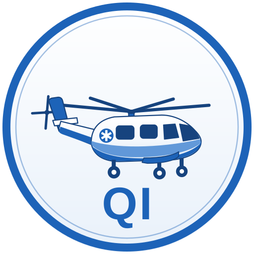

Trauma Star Documentation QI
Monroe County Fire Rescue · Critical Care Flight Chart Audit · Medical Necessity + CAMTS + Reimbursement Readiness

Flight Information
Flight Date
OCA Number
Aircraft
Select...
Trauma Star North
Trauma Star South
Chief Complaint
Flight Nurse
Flight Paramedic
Pilot
Pick-up Location
Drop-off Location
Mission Profile
Scene Call
Interfacility (IFT)
Air Transport
Ground CCT
Ventilated Patient
Sedated / Intubated / Agitated
Source Documents & Photos (up to 30)
+ Upload PDFs & Photos
📷 Take Photo
Chart Narrative / Documentation
Analyze Documentation
Save to Log
Export PDF
New Review
Billing — ICD-10 & Transport Codes
Primary ICD-10
Secondary ICD-10 (comma separated)
Transport Code (HCPCS)
Select...
A0431 — Rotary wing air ambulance
A0430 — Fixed wing air ambulance
A0434 — Specialty Care Transport (ground SCT)
A0433 — ALS2 (ground)
A0427 — ALS1 emergency (ground)
A0429 — BLS emergency (ground)
Loaded Miles
Mission Times
24-hour times, e.g. 1432 or 14:32. Overnight rollover is handled automatically.
Dispatch / Tones
Wheels Up (En Route)
Land at Scene / Facility
Depart (Takeoff w/ Patient)
Review Log
Reviews are saved on this device, keyed by OCA number. Click a review to reload it; Export PDF creates a file you can email.
--
Awaiting analysis
Enter flight information and paste the chart, then press Analyze.
Click any item to cycle: Pass → Missing → N/A. Amber items need reviewer judgment.
Call Summary & Reviewer Assessment
Reviewer Comments (optional)
Language Audit — Words That Get Claims Denied
Risk Management Screen